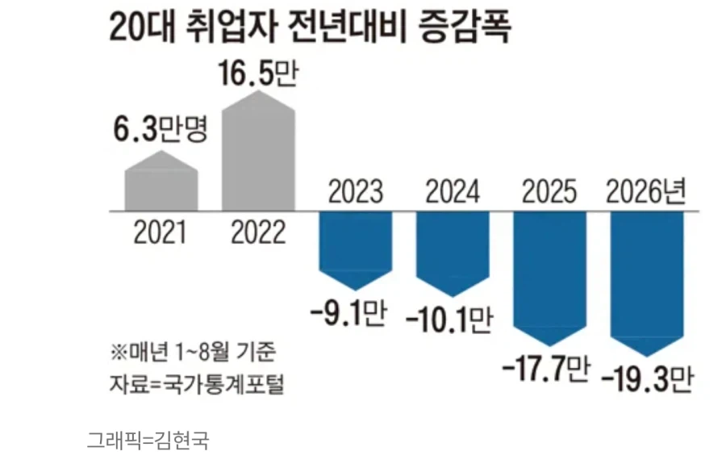
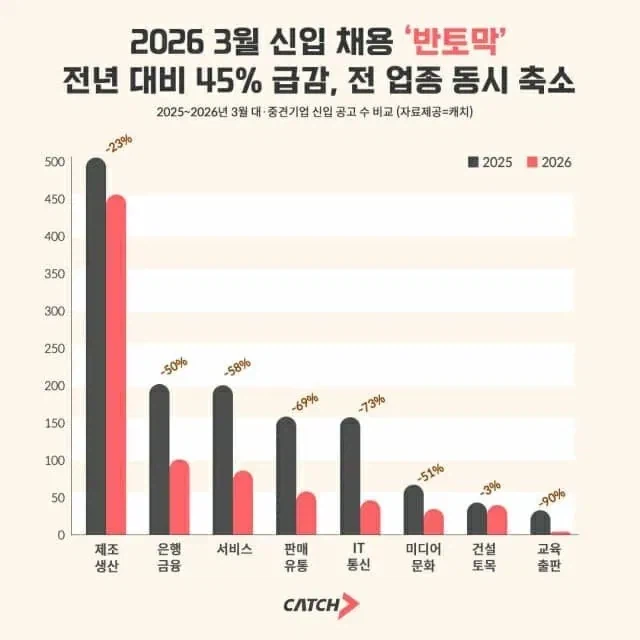

20대 취업자 감소
신규 채용 공고 모두 역대급 감소


20대 취업자 감소
신규 채용 공고 모두 역대급 감소
경제 지표 부동의 0순위 지표가 실업률이다 실업률 상승하면 경제 걍 99% 박살임 주식도 마찬가지다 뭐가 원인이고 결과인지는 덮어두고. 미국 실업률이 더 중요함
월급 받아도 어디 안나가고 집밥만 하고 집콕데이트하는 중임
시내 나가도 다 공실이고 즐길것도 없고. 우리도 잘리고 나면 결국 저렇게 되겠지…
전년대비 증감폭은 누적임?
작ㄴ년에 17.7만 감소했는데, 올해는 거기에 19.9만 더 감소? ㄷㄷ
전년대비라니까 올해에 19.9만 감소했다는거 아님?
2025년에 전년 대비 17.7만 감소 했고
올해 전년 대비 19.9만 감소했으니까
2024년 대비 37.6만 감소했다고?
2022년 대비 56.8만 감소했고?
신입 채용은 줄고
20대는 점점 30대로 넘어가고
저출산으로 10대에서 20대로 넘어오는 사람은 적은거 종합하면 뭐 그럴듯하지 않나?
그럼 엄청 심각한 거 아님? ㄷㄷ
ai 슈웃~
제조는 ai랑 상관없는데도 저럼
퇴사마려운데 이런거 보면 주저하게됨 ㅅㅂ
저출산은 기회냐 좆망의 길이나
출산율로 밸런스 맞추고있잖아
그래프가 우하향하는 거 보니 내 취업 운도 우하향 중임
걍 양극화고 몰리는 곳(대기업 사무직)만 몰리지 일손 부족한 곳은 항상 부족함 지금 수도권 인테리어, 철거 업체들 전부 대호황이고 일감 너무 많아서 일 맡기려면 몇달 전에 잡아야 하는 수준임 걍 눈을 낮추거나 아예 다른 길을 찾아.. 서울 사무직만 찾지 말고
그리고 저게 왜 호들갑인줄 알아? 26년도 경찰,소방 경쟁률만 봐도 알 수 있음 공무원 경쟁률 집계 이후로 역대 최저임 특히 경기도 경찰은 실경쟁률 5:1도 안될거임 이런데 무슨 취업난이야 그냥 사무직으로만 몰리니까 그렇게 보이는거지 공무원이라서 안하는거라고? 공기업도 사무영업 직렬은 경쟁률 100:1인데 현장직렬들 3:1, 4:1이다ㅋㅋ 누구나 다 아는 공기업들도 이정도임
한국인들 죄다 황금 티켓 증후군 걸렸음 진심으로 어중간한 4년제 나와서 절대 못뚫을 대기업 사무직만 쳐다보고 있는 와중에 고졸 20살 택배기사가 30살 40살 되었을 때 형성한 자산 압도적으로 높을거임 취업 1년만 늦어져도 생애소득 5%씩 복리로 사라진다고함 2년만 늦어져도 생애소득으로 12% 손해보는거야 20억이라고 가정하면 2억 넘게 손해 본거야 걍 적당히 하고 기술직, 현장직 하는게 길게보면 본인한테 좋을거임
점점 자동화 AI화 되면서 신규인력 필요숫자가 줄어드니 취업자 숫자는 줄어들고 회사 이익률은 늘어나면서 기존인원은 인센티브 축제열고 있고 상대적으로 미취업자는 가난해지고 더 취업이 어려워지고 있음 점점더 심해질 예정이라..